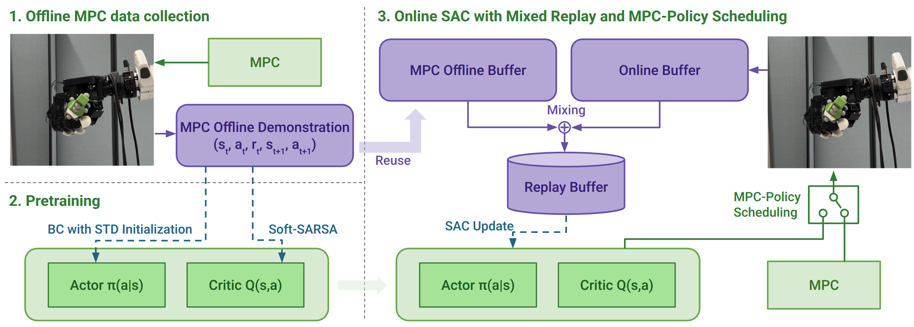
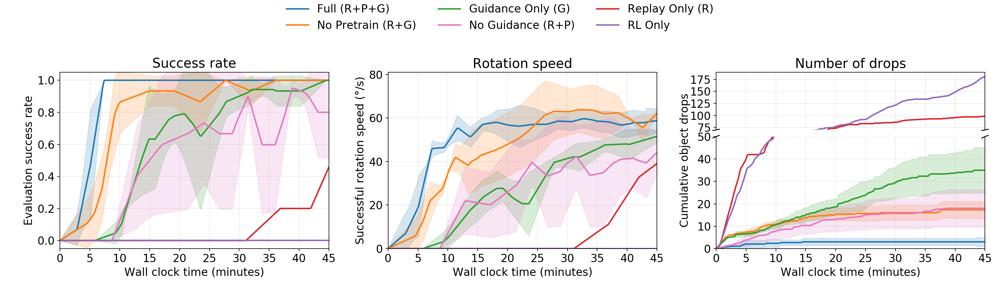

Supplementary Video

1000 Consecutive Rotations without a Drop
Real-world reinforcement learning (RL) offers a promising route to dexterous manipulation policies that can adapt directly from physical interaction, but learning is hindered by inefficient early exploration and costly failures. We propose a framework that uses sampling-based model predictive control (MPC) as scaffolding for real-world dexterous RL, providing structured prior experience and task-directed guidance during learning without human demonstrations or corrective actions.
A small set of MPC trajectories is first used to populate an offline replay buffer and to pretrain the actor and critic. During online learning, MPC intermittently guides data collection while an off-policy Soft Actor-Critic learner trains from both prior MPC experience and newly collected physical interaction, with control gradually transitioning to the learned policy.
On continuous in-hand rotation with a 16-DoF Allegro hand, the method reaches 100% success in policy-only evaluation (5/5 trials) after 7 minutes of online RL, following initialization with 20 MPC trajectories collected on hardware in 12 minutes. Online training incurs about three object drops on average. After 20 minutes of online learning, the policy achieves more than five times the rotation speed of the MPC controller. It completes 1000 consecutive rotations over more than 110 minutes without a drop. Ablations show complementary benefits from MPC-based pretraining, retained MPC experience, and online MPC guidance. We further demonstrate rapid adaptation to different object geometries and successful goal-conditioned reorientation, showing that the framework enables efficient, low-intervention, real-world dexterous RL.

Overview of our framework. Stage 1 (Offline MPC Data Collection): trajectories are collected via MPC. Stage 2 (Pretraining): the collected demonstrations pretrain the actor using behavior cloning with standard-deviation initialization and the critic via Soft-SARSA. Stage 3 (Online SAC with Mixed Replay and MPC-Policy Scheduling): the actor-critic network is fine-tuned with SAC using a mixed replay buffer combining offline demonstrations and online transitions. An MPC-policy scheduling mechanism dynamically alternates control between the learned policy and MPC for guided exploration.
Sampling-based MPC serves as a scaffold for an off-policy learner, and the learned policy progressively replaces MPC during real-world interaction. Both MPC and the policy command the same joint-level hand-control interface, so the off-policy learner uses their transitions identically, regardless of which controller generated them.
MPC replay (R) preserves task-relevant prior experience, pretraining (P) provides a better starting point, and online guidance (G) improves the quality and consistency of newly collected interaction.

Ablation results for continuous in-hand rotation.
Starting from the policy trained on the 45 mm hexagonal object, continued real-world learning with online MPC guidance adapts it to a 35 mm hexagonal object and a 55 mm circular object, without new offline MPC data or repeated pretraining.
35 mm hexagonal object
55 mm circular object
The same framework learns goal-conditioned reorientation about an axis perpendicular to the object’s principal axis, reaching commanded headings within ±20° while maintaining the grasp.
Settings shared across experiments.
| Parameter | Value |
|---|---|
| Control frequency | 10 Hz, joint position targets for 16 Allegro DoF |
| Offline MPC trajectories (rotation) | 20 trajectories, one full rotation each, ~12 min |
| Offline MPC data (reorientation) | ~7 min of interaction |
| Mini-batch replay mix | 30% offline MPC data, 70% online data |
| Target critic ensemble | 10 critics, minimum over ensemble |
| Initial policy-execution probability p0 | 0.5 |
| Scheduling horizon K | 6000 environment steps (~10 min) |
| Controller chunk length L | 40 steps |
| Rotation reward | λψ = 20, λτ = −0.3, bsucc = 200, bdrop = −50 |
| Evaluation | 5 policy-only episodes, 90 s horizon, success = one full 2π rotation without a drop |